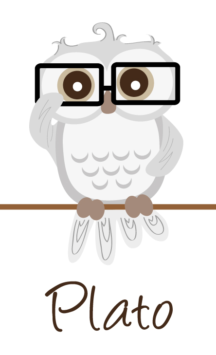

The Cute Little Owls Family
Ollie and Olive are best friends and with them the CLO family grows bigger and bigger with friends of all shapes, sizes and colors. They are not like normal owls and are usually awake in the day time.
Meet the rest of the CLO family members!
1 / 8
One of the biggest owls here. Although his size is bigger than normal owls which makes him scary looking.
He is actually a big teddy bear and gives the best cuddles
2 / 8
Is a medium-sized owl. A social chatty owl who loves to be surrounded by friends all the time.
3 / 8
A tiny pink owl respresenting breast cancer, don't be deceived by her size, although she is
tin - the size of a ping pong ball she has super power strength.
4 / 8

Also a tiny wise owl who enjoys reading a good philosophical book and conversation.
5 / 8
Although Owglie is not the best looking owl on the tree, making him stand out like a sore thumb there
is still something uniquely special about him.
6 / 8
Named after the popular twerking song...Our best holiday owl yet. He definitely likes to peacock
his tail feathers often!
7 / 8
Named after Willow who likes to let her hair swing back and forth from her best music video. She is also inspired
by Willy Wonka and enjoys any sugary treats offered to her and always hangs on the branch upside down.
8 / 8

A nocturnal owl, which like regular owls who sleep in the day time and stays awake in the day time.